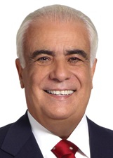
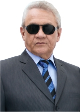

São Paulo
Quem ocupa os cargos hoje e quem assume em 2027.
Resultado provisórioTSE, capturado em 29/10/2026
Poder Executivo
Administra o governo e executa as leis: saúde, educação, segurança, estradas e o orçamento.
Governador
TarcísioREPUBLICANOS · 13.480.643 votos★ Novato›Quem comanda cada cidade do estado.
Poder Legislativo
Cria as leis, aprova o orçamento e fiscaliza o Executivo.
Senadores (3)
Astronauta Marcos PontesPL · 10.714.913 votos · eleito em 2022★ Novato no Senado› GiordanoMDB · no cargo desde 2021›Mara GabrilliPSDB · 6.513.282 votos · eleito em 2018★ Novato no Senado›
GiordanoMDB · no cargo desde 2021›Mara GabrilliPSDB · 6.513.282 votos · eleito em 2018★ Novato no Senado›
Deputados federais (70)
Bancada federal por partido
70 cadeiras de São Paulo
- PL1724%
- PT1014%
- UNIÃO69%
- MDB57%
- PSOL57%
- REPUBLICANOS57%
- PP46%
- PODE34%
- PSD34%
- PSDB34%
- CIDADANIA23%
- PSB23%
- NOVO11%
- PCDOB11%
- PSC11%
- REDE11%
- SOLIDARIEDADE11%
Do partido com mais cadeiras para o com menos, não por posição política. Cada partido usa a sua cor de marca; cinza é partido sem cor registrada na fonte.
Deputados federais (70): buscar e ver a lista

Antonio Carlos RodriguesPL · 73.054 votos · eleito em 2022★ Novato na Câmara›Arlindo ChinagliaPT · 144.108 votos✓ Reeleito›Arnaldo JardimCIDADANIA · 113.462 votos · eleito em 2022✓ Reeleito›Baleia RossiMDB · 236.463 votos✓ Reeleito›Bruno GanemPODE · 141.595 votos · eleito em 2022★ Novato na Câmara›Capitão AugustoPL · 168.740 votos✓ Reeleito›Capitão DerritePL · 239.772 votos✓ Reeleito›Carlos SampaioPSDB · 98.102 votos✓ Reeleito›Carlos ZarattiniPT · 147.349 votos✓ Reeleito›Celso RussomannoREPUBLICANOS · 305.520 votos✓ Reeleito›Cezinha de MadureiraPSD · 143.434 votos · eleito em 2022✓ Reeleito›David SoaresUNIÃO · 93.831 votos · eleito em 2022✓ Reeleito›Delegado Bruno LimaPP · 461.217 votos★ Novato na Câmara›Delegado PalumboMDB · 254.898 votos★ Novato na Câmara›Delegado Paulo BilynskyjPL · 72.156 votos★ Novato na Câmara›Delegado da CunhaPP · 181.568 votos · eleito em 2022★ Novato na Câmara›Erika HiltonPSOL · 256.903 votos★ Novato na Câmara›Fabio TeruelMDB · 235.165 votos · eleito em 2022★ Novato na Câmara›Fausto PinatoPP · 72.169 votos · eleito em 2022✓ Reeleito›Felipe BecariUNIÃO · 178.777 votos★ Novato na Câmara›Gilberto NascimentoPSC · 95.077 votos · eleito em 2022✓ Reeleito›Jefferson CamposPL · 155.336 votos✓ Reeleito›Jilmar TattoPT · 157.843 votos↺ Retorno›Jonas DonizettePSB · 84.044 votos↺ Retorno›João CuryMDB · no cargo desde 2025›Juliana CardosoPT · 125.517 votos★ Novato na Câmara›Kiko CeleguimPT · 167.438 votos★ Novato na Câmara›Kim KataguiriUNIÃO · 295.460 votos✓ Reeleito›Luiz Philippe de O BragançaPL · 79.210 votos✓ Reeleito›Luiza ErundinaPSOL · 113.983 votos✓ Reeleito›MarangoniUNIÃO · 89.390 votos · eleito em 2022★ Novato na Câmara›Marcio AlvinoPL · 187.314 votos✓ Reeleito›Marcos PereiraREPUBLICANOS · 231.626 votos✓ Reeleito›Maria RosasREPUBLICANOS · 94.787 votos✓ Reeleito›Marina SilvaREDE · 237.526 votos · eleito em 2022★ Novato na Câmara›Mario FriasPL · 122.564 votos★ Novato na Câmara›Mauricio NevesPP · 129.731 votos★ Novato na Câmara›Miguel LombardiPL · 107.869 votos✓ Reeleito›Milton VieiraREPUBLICANOS · 98.557 votos · eleito em 2022✓ Reeleito›Missionário José OlimpioPL · no cargo desde 2025›MottaPL · 104.701 votos✓ Reeleito›Nilto TattoPT · 151.861 votos✓ Reeleito›Orlando SilvaPCDOB · no cargo desde 2025›Pastor Marco FelicianoPL · 220.595 votos✓ Reeleito›Paulinho da ForçaSOLIDARIEDADE · no cargo desde 2024›Paulo Alexandre BarbosaPSDB · 170.378 votos★ Novato na Câmara›Paulo Freire da CostaPL · 161.675 votos✓ Reeleito›Paulo TeixeiraPT · 122.800 votos · eleito em 2022✓ Reeleito›Professora Luciene CavalcantePSOL · no cargo desde 2023›Renata AbreuPODE · 180.247 votos✓ Reeleito›Ribamar SilvaPSD · no cargo desde 2024›Ricardo SallesPL · 640.918 votos · eleito em 2022★ Novato na Câmara›Rodrigo GambalePODE · 108.209 votos★ Novato na Câmara›Rosana VallePL · 216.437 votos✓ Reeleito› Rosângela MoroUNIÃO · 217.170 votos★ Novato na Câmara›Rui FalcãoPT · 193.990 votos · eleito em 2022✓ Reeleito›Saulo PedrosoPSD · no cargo desde 2023›Simone MarquettoMDB · 97.730 votos · eleito em 2022★ Novato na Câmara›Sâmia BomfimPSOL · 226.187 votos✓ Reeleito›Sônia GuajajaraPSOL · 156.966 votos★ Novato na Câmara›Tabata AmaralPSB · 337.873 votos✓ Reeleito›TiriricaPL · 71.754 votos · eleito em 2022✓ Reeleito›Vinicius CarvalhoREPUBLICANOS · 113.009 votos · eleito em 2022✓ Reeleito›Vitor LippiPSDB · 106.661 votos · eleito em 2022✓ Reeleito›
Rosângela MoroUNIÃO · 217.170 votos★ Novato na Câmara›Rui FalcãoPT · 193.990 votos · eleito em 2022✓ Reeleito›Saulo PedrosoPSD · no cargo desde 2023›Simone MarquettoMDB · 97.730 votos · eleito em 2022★ Novato na Câmara›Sâmia BomfimPSOL · 226.187 votos✓ Reeleito›Sônia GuajajaraPSOL · 156.966 votos★ Novato na Câmara›Tabata AmaralPSB · 337.873 votos✓ Reeleito›TiriricaPL · 71.754 votos · eleito em 2022✓ Reeleito›Vinicius CarvalhoREPUBLICANOS · 113.009 votos · eleito em 2022✓ Reeleito›Vitor LippiPSDB · 106.661 votos · eleito em 2022✓ Reeleito›Deputados estaduais e distritais (94)
Assembleia por partido
94 cadeiras de São Paulo
- PL1920%
- PT1718%
- PSDB910%
- REPUBLICANOS89%
- UNIÃO77%
- PSOL55%
- MDB44%
- PODE44%
- PSB44%
- PSD44%
- CIDADANIA33%
- PP33%
- PSC22%
- NOVO11%
- PCDOB11%
- PDT11%
- REDE11%
- SOLIDARIEDADE11%
Do partido com mais cadeiras para o com menos, não por posição política. Cada partido usa a sua cor de marca; cinza é partido sem cor registrada na fonte.
Deputados estaduais e distritais (94): buscar e ver a lista
 DR. EltonPSC · 46.042 votos · eleito em 2022★ Novato›DR. Jorge do CarmoPT · 82.054 votos · eleito em 2022✓ Reeleito›DalbenCIDADANIA · 93.397 votos · eleito em 2022✓ Reeleito›Dani AlonsoPL · 80.337 votos★ Novato›Daniel SoaresUNIÃO · 81.753 votos · eleito em 2022✓ Reeleito›Delegada GracielaPL · 68.955 votos✓ Reeleito›Delegado OlimPP · 201.348 votos✓ Reeleito›DonatoPT · 88.022 votos★ Novato›Ediane MariaPSOL · 175.617 votos★ Novato›Edmir ChedidUNIÃO · 129.097 votos · eleito em 2022✓ Reeleito›Edna MacedoREPUBLICANOS · 82.932 votos · eleito em 2022✓ Reeleito›Eduardo SuplicyPT · 807.015 votos★ Novato›Emídio de SouzaPT · 157.834 votos✓ Reeleito›Enio TattoPT · 142.785 votos✓ Reeleito›Fabiana B.PL · 65.497 votos · eleito em 2022★ Novato›Felipe FrancoUNIÃO · 90.440 votos · eleito em 2022★ Novato›Gerson PessoaPODE · 143.704 votos · eleito em 2022★ Novato›Gil DinizPL · 196.215 votos✓ Reeleito›Gilmaci SantosREPUBLICANOS · 96.361 votos✓ Reeleito›Guilherme CortezPSOL · 45.094 votos★ Novato›Guto ZacariasUNIÃO · 152.481 votos · eleito em 2022★ Novato›Helinho ZanattaPSC · 77.550 votos · eleito em 2022★ Novato›Itamar BorgesMDB · 183.480 votos✓ Reeleito›Jorge Wilson Xerife ConsumidorREPUBLICANOS · 177.614 votos · eleito em 2022✓ Reeleito›Leci BrandãoPCDOB · 90.496 votos · eleito em 2022✓ Reeleito›Leo OliveiraMDB · 82.145 votos✓ Reeleito›Leo SiqueiraNOVO · 90.688 votos · eleito em 2022★ Novato›Letícia AguiarPP · 68.556 votos✓ Reeleito›Lucas BovePL · 130.451 votos★ Novato›Luiz Claudio MarcolinoPT · 70.487 votos↺ Retorno›Luiz FernandoPT · 141.017 votos✓ Reeleito›Major MeccaPL · 224.462 votos · eleito em 2022✓ Reeleito›Marcia LiaPT · 108.587 votos · eleito em 2022✓ Reeleito›Marcio NakashimaPDT · 85.195 votos · eleito em 2022✓ Reeleito›Marcos DamasioPL · 183.219 votos✓ Reeleito›Maria Lucia AmaryPSDB · 66.956 votos · eleito em 2022✓ Reeleito›Marina HelouREDE · 85.517 votos · eleito em 2022✓ Reeleito›Marta CostaPSD · 170.541 votos✓ Reeleito›MauriciPT · 121.455 votos · eleito em 2022✓ Reeleito›Mauro BragatoPSDB · 78.142 votos✓ Reeleito›Milton Leite FilhoUNIÃO · 198.429 votos✓ Reeleito›Monica do Movimento PretasPSOL · 106.781 votos✓ Reeleito›Oseias de MadureiraPSD · 137.205 votos · eleito em 2022★ Novato›Paula da Bancada FeministaPSOL · 259.771 votos★ Novato›Paulo Corrêa JRPSD · 62.239 votos · eleito em 2022✓ Reeleito›Paulo FioriloPT · 110.251 votos✓ Reeleito›Paulo MansurPL · 86.201 votos★ Novato›Prof. Camila GodoiPSB · 48.986 votos★ Novato›Professora BebelPT · 155.983 votos✓ Reeleito›Rafa ZimbaldiCIDADANIA · 76.910 votos · eleito em 2022✓ Reeleito›Rafael SaraivaUNIÃO · 98.070 votos★ Novato›
DR. EltonPSC · 46.042 votos · eleito em 2022★ Novato›DR. Jorge do CarmoPT · 82.054 votos · eleito em 2022✓ Reeleito›DalbenCIDADANIA · 93.397 votos · eleito em 2022✓ Reeleito›Dani AlonsoPL · 80.337 votos★ Novato›Daniel SoaresUNIÃO · 81.753 votos · eleito em 2022✓ Reeleito›Delegada GracielaPL · 68.955 votos✓ Reeleito›Delegado OlimPP · 201.348 votos✓ Reeleito›DonatoPT · 88.022 votos★ Novato›Ediane MariaPSOL · 175.617 votos★ Novato›Edmir ChedidUNIÃO · 129.097 votos · eleito em 2022✓ Reeleito›Edna MacedoREPUBLICANOS · 82.932 votos · eleito em 2022✓ Reeleito›Eduardo SuplicyPT · 807.015 votos★ Novato›Emídio de SouzaPT · 157.834 votos✓ Reeleito›Enio TattoPT · 142.785 votos✓ Reeleito›Fabiana B.PL · 65.497 votos · eleito em 2022★ Novato›Felipe FrancoUNIÃO · 90.440 votos · eleito em 2022★ Novato›Gerson PessoaPODE · 143.704 votos · eleito em 2022★ Novato›Gil DinizPL · 196.215 votos✓ Reeleito›Gilmaci SantosREPUBLICANOS · 96.361 votos✓ Reeleito›Guilherme CortezPSOL · 45.094 votos★ Novato›Guto ZacariasUNIÃO · 152.481 votos · eleito em 2022★ Novato›Helinho ZanattaPSC · 77.550 votos · eleito em 2022★ Novato›Itamar BorgesMDB · 183.480 votos✓ Reeleito›Jorge Wilson Xerife ConsumidorREPUBLICANOS · 177.614 votos · eleito em 2022✓ Reeleito›Leci BrandãoPCDOB · 90.496 votos · eleito em 2022✓ Reeleito›Leo OliveiraMDB · 82.145 votos✓ Reeleito›Leo SiqueiraNOVO · 90.688 votos · eleito em 2022★ Novato›Letícia AguiarPP · 68.556 votos✓ Reeleito›Lucas BovePL · 130.451 votos★ Novato›Luiz Claudio MarcolinoPT · 70.487 votos↺ Retorno›Luiz FernandoPT · 141.017 votos✓ Reeleito›Major MeccaPL · 224.462 votos · eleito em 2022✓ Reeleito›Marcia LiaPT · 108.587 votos · eleito em 2022✓ Reeleito›Marcio NakashimaPDT · 85.195 votos · eleito em 2022✓ Reeleito›Marcos DamasioPL · 183.219 votos✓ Reeleito›Maria Lucia AmaryPSDB · 66.956 votos · eleito em 2022✓ Reeleito›Marina HelouREDE · 85.517 votos · eleito em 2022✓ Reeleito›Marta CostaPSD · 170.541 votos✓ Reeleito›MauriciPT · 121.455 votos · eleito em 2022✓ Reeleito›Mauro BragatoPSDB · 78.142 votos✓ Reeleito›Milton Leite FilhoUNIÃO · 198.429 votos✓ Reeleito›Monica do Movimento PretasPSOL · 106.781 votos✓ Reeleito›Oseias de MadureiraPSD · 137.205 votos · eleito em 2022★ Novato›Paula da Bancada FeministaPSOL · 259.771 votos★ Novato›Paulo Corrêa JRPSD · 62.239 votos · eleito em 2022✓ Reeleito›Paulo FioriloPT · 110.251 votos✓ Reeleito›Paulo MansurPL · 86.201 votos★ Novato›Prof. Camila GodoiPSB · 48.986 votos★ Novato›Professora BebelPT · 155.983 votos✓ Reeleito›Rafa ZimbaldiCIDADANIA · 76.910 votos · eleito em 2022✓ Reeleito›Rafael SaraivaUNIÃO · 98.070 votos★ Novato›
Rafael SilvaPSD · 118.182 votos · eleito em 2022✓ Reeleito›ReisPT · 108.726 votos · eleito em 2022★ Novato›Ricardo FrançaPODE · 64.175 votos★ Novato›Ricardo MadalenaPL · 90.630 votos✓ Reeleito›Rodrigo MoraesPL · 75.094 votos✓ Reeleito›Rogério NogueiraPSDB · 139.756 votos✓ Reeleito›Rogério SantosMDB · 76.602 votos · eleito em 2022★ Novato›Rui AlvesREPUBLICANOS · 91.717 votos · eleito em 2022★ Novato›Rômulo FernandesPT · 75.033 votos★ Novato›Sebastião SantosREPUBLICANOS · 104.374 votos✓ Reeleito›Solange FreitasUNIÃO · 81.870 votos★ Novato›Tenente CoimbraPL · 209.705 votos✓ Reeleito›Thainara FariaPT · 91.388 votos★ Novato›Thiago AuricchioPL · 123.483 votos✓ Reeleito›Tomé AbduchREPUBLICANOS · 221.656 votos · eleito em 2022★ Novato›Valeria BolsonaroPL · 131.557 votos · eleito em 2022✓ Reeleito›Vinicius CamarinhaPSDB · 123.316 votos · eleito em 2022✓ Reeleito›Vitão do CachorrãoREPUBLICANOS · 56.729 votos · eleito em 2022★ Novato›Os eleitos de cada cidade do estado.
Poder Judiciário
Julga os conflitos e garante que as leis sigam a Constituição.
Os desembargadores do Tribunal de Justiça e do Tribunal Regional Eleitoral. Não são eleitos.
Poder Executivo
Administra o governo e executa as leis: saúde, educação, segurança, estradas e o orçamento.
Governador
TarcísioREPUBLICANOS · 14.491.874 votos✓ Reeleito›Quem comanda cada cidade do estado.
Poder Legislativo
Cria as leis, aprova o orçamento e fiscaliza o Executivo.
Senadores (3)
André do PradoPL · 12.703.089 votos★ Novato no Senado›Astronauta Marcos PontesPL · 10.714.913 votos · eleito em 2022★ Novato no Senado›Guilherme DerritePP · 13.273.880 votos★ Novato no Senado›Deputados federais (70)
Bancada federal por partido
70 cadeiras de São Paulo
- PL1927%
- PT1116%
- PODE69%
- PSD69%
- PSOL69%
- REPUBLICANOS69%
- MDB46%
- PP34%
- NOVO23%
- PSB23%
- UNIÃO23%
- MISSÃO11%
- PRD11%
- PSDB11%
Do partido com mais cadeiras para o com menos, não por posição política. Cada partido usa a sua cor de marca; cinza é partido sem cor registrada na fonte.
Deputados federais (70): buscar e ver a lista
Deputados estaduais e distritais (94)
Assembleia por partido
94 cadeiras de São Paulo
- PL2729%
- PT1617%
- PSD910%
- PSOL910%
- PODE66%
- REPUBLICANOS66%
- MDB55%
- PP55%
- UNIÃO44%
- PSB33%
- MISSÃO11%
- NOVO11%
- PRD11%
- PSDB11%
Do partido com mais cadeiras para o com menos, não por posição política. Cada partido usa a sua cor de marca; cinza é partido sem cor registrada na fonte.
Deputados estaduais e distritais (94): buscar e ver a lista
Os eleitos de cada cidade do estado.
Poder Judiciário
Julga os conflitos e garante que as leis sigam a Constituição.
Os desembargadores do Tribunal de Justiça e do Tribunal Regional Eleitoral. Não são eleitos.
Como ler
★ Novato Primeiro mandato nesta casa (Câmara ou Senado).
✓ Reeleito Já estava no cargo e foi eleito de novo.
↺ Retorno Já teve mandato, mas estava fora.
Sem selo Não conseguimos ligar a pessoa a um mandato anterior. Isso não quer dizer que seja novata: simplesmente não afirmamos nada.
Provisório Só é confirmado na diplomação.